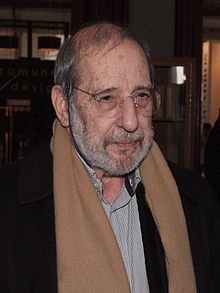

Álvaro Siza Vieira
Siza was born in Matosinhos, a small coastal town near Porto. He graduated in architecture in 1955, at the former School of Fine Arts of the University of Porto, the current FAUP – Faculdade de Arquitectura da Universidade do Porto. Siza completed his first built work (four houses in Matosinhos) even before ending his studies in 1954, the same year that he first opened his private practice in Porto. Along with Fernando Távora, he soon became one of the references of the Porto School of Architecture where both were teachers. Both architects worked together between 1955 and 1958. Another architect he has collaborated with is Eduardo Souto de Moura, e.g. on Portugal's flagship pavilions at Expo '98 in Lisbon and Expo 2000 in Hannover, as well as on the Serpentine Pavillon 2005. Siza's work is often described as "poetic modernism";[1] he himself has contributed to publications on Luis Barragán. Among Siza's earliest works to gain public attention was a public pool complex (named Piscinas de Marés) he created in the 1960s for Leça da Palmeira, a fishing town and summer resort north of Porto. Completed in 1966, both of the two swimming pools (one for children, the other for adults) as well as the building with changing rooms and a cafe are set into the natural rock formation on the site with unobstructed views of the sea.[2] In 1977, following the revolution in Portugal, the city government of Évora commissioned Siza to plan a housing project in the rural outskirts of the town. It was to be one of several that he would do for SAAL (Serviço de Apoio Ambulatório Local), the national housing association, consisting of 1,200 low-cost, housing units, some one-story and some two-story row houses, all with courtyards.[3] He was also a member of the team which reconstructed Chiado, the historic center of Lisbon destroyed by a fire in 1988. Most of his best known works are located in his hometown Porto: the Boa Nova Tea House (1963), the Faculty of Architecture (1987–93), and the Serralves Museum of Contemporary Art (1997). Since the mid-1970s, Siza has been involved in numerous designs for public housing, public pools,[4] and universities. Between 1995 and 2009, Siza has been working on an architecture museum on Hombroich island, completed in collaboration with Rudolf Finsterwalder.[5] Most recently, he started coordinating the rehabilitation of the monuments and architectonic heritage of Cidade Velha (Old Village) in Santiago, an island of Cape Verde. Commissioned after winning an international competition in 2010, Siza and Granada-based Juan Domingo Santos unveiled designs for a new entrance and visitors center at the Alhambra in 2014.[6] By 2012, Siza warned that he might close his Portuguese office because of a lack of contracts.[7] In 2014, Álvaro Siza designed, with Carlos Castanheira the Building on the Water in Huai'An City, Jiangsu, China that was awarded the building of the year 2015 by ArchDaily.[8][9] In 2019, Alvaro Siza was commissioned with his first project in the United States, a 450-foot-tall, 37-story apartment building at 611 West 56th Street in Manhattan.[10] In 2020, Álvaro Siza designed four buildings respectively Siza House, YuChia House, Tea House and Gate House at the Taifong Golf Club, in Changhua, Taiwan.[11]
other